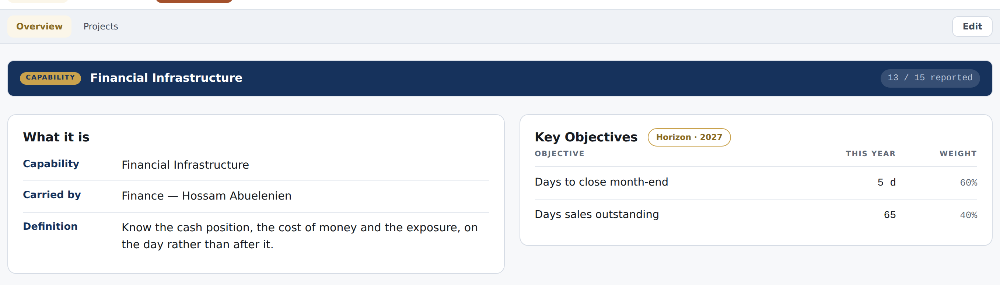
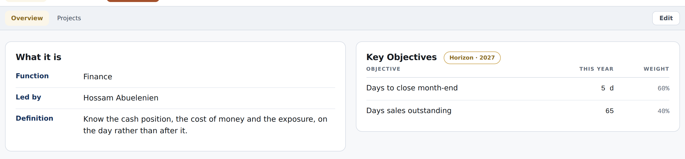
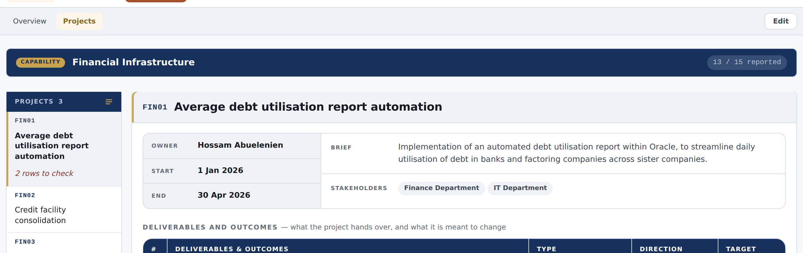
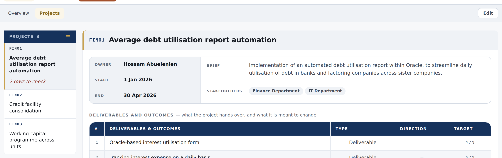
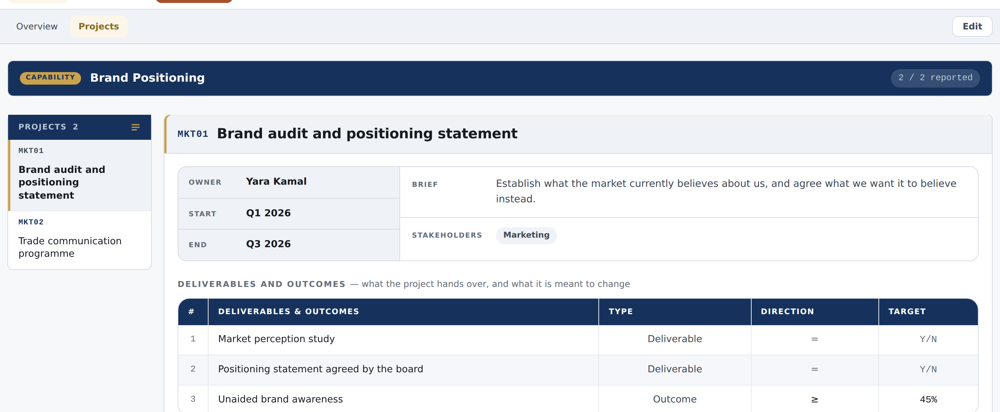

A supporting function that plans in projects draws its projects inside a
capability. Where the function really has one, that box is not a capability —
it is a container with a name on it, and the platform shouts the word over every page.
“that will keep my projects under a capability while there is not capability
there and this might be confused with real capabilities we need to build these are more of
fucntional projects”
Islam, 12 September
This is the half of last night’s change that was
recorded and not built. Removing a capability now offers to keep its projects — and they
land inside whatever box is left, which is the box you are objecting to.
What is actually on the screen
6 of 7functions that plan in projects carry exactly one capability today. Only Marketing carries two.
4pages draw the navy CAPABILITY band: Overview, Projects, Performance, Reporting.
2×the Overview says it twice — a band, and then a row reading Capability: Financial Infrastructure.
0project codes mention it. They already read FIN01, FIN02, FIN03 — the function’s own letters.
So the projects are already the function’s everywhere it counts. The box
is a layer of vocabulary sitting on top of them, and on six functions out of seven it names
something that does not exist.
Finance · Overview
Today — the band, then the same fact again as a field

Proposed — the function, led by, and its definition

This is not a new design. It is exactly what a function that plans in pillars
already draws — Merchandising’s Overview reads Function · Led by · Definition
with no band at all. The two ways of planning were decided long ago to share one Overview,
and only the projects side kept the extra layer.
Finance · Projects
Today

Proposed — the rail leads: Projects 3

Performance and Reporting lose the same band and nothing else — no figure, no
score, no control moves.
Marketing · two capabilitiesUnchanged — here the band is doing its job

Where a function really carries more than one, the band is the only thing saying
which set of projects you are looking at. It stays, exactly as it is.
Two things to decide
1 · The one box has a name. Where does it go?
Finance’s container is called Financial Infrastructure. With the box not drawn,
that name is shown nowhere.
Stop showing it Recommended
The function’s name is the name. Nothing is deleted — the box and its
name stay in the data, so the day a second capability is added the box comes back
with its name intact. Its definition and its objectives become the function’s, which
is what the page already calls them.
Keep the name as a subtitle
Smaller and quieter, under the function’s name. Nothing is lost — but it
is still a second name for the same thing, which is the confusion you are reporting.
2 · When does the box disappear?
By itself, whenever there is only one Recommended
Nothing to set and nothing to keep up to date. Add a second capability and
both boxes appear; go back down to one and it goes quiet again. With one box there is
nothing for it to tell apart, which is the only reason it was ever drawn.
The function says which it is
A setting: we plan in capabilities or we just have projects.
More honest if a function has one real capability and means to add more. It is
also the same question as choosing how a function plans at all, which is already on the
list to be designed properly — so this would be better answered there than bolted on here.
What this does not touch
Nothing is deleted. The box, its name, its definition and its objectives all stay
where they are. Only the drawing changes.
No figure moves. No score, no reported number, no archive, no download file.
Marketing is untouched, and so is Merchandising, which never had a box.
One thing I would leave for a second step. The review deck still opens
“Capability review”, and the plan workbook’s first sheet still asks you to pick a capability.
Those follow the same rule, but they are a separate piece of work — I would rather name them
now than quietly half-do them.